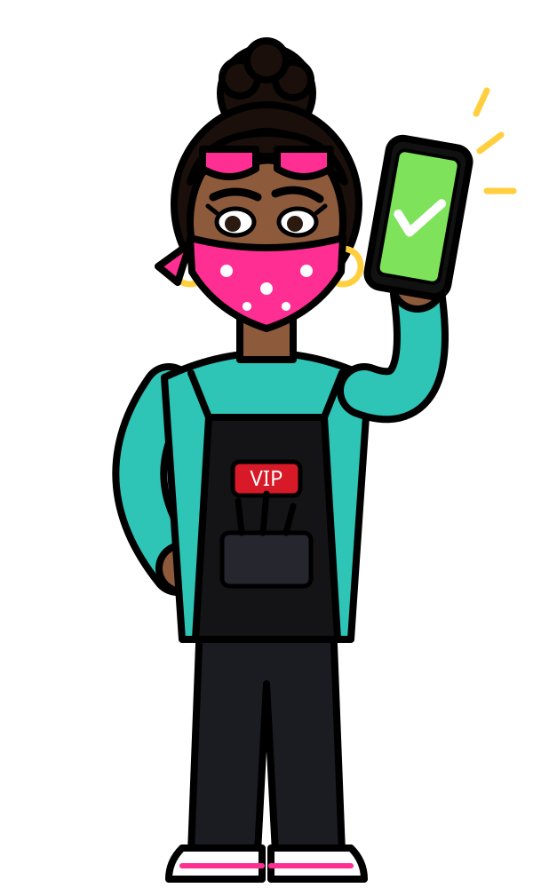

Cracked screen?
The crew's on it
Most iPhone screens fixed in ~15 min*

+ FREE screen protector
380-271-8085
*Most iPhone screens & batteries. Back glass & other repairs may take longer, depend on parts.